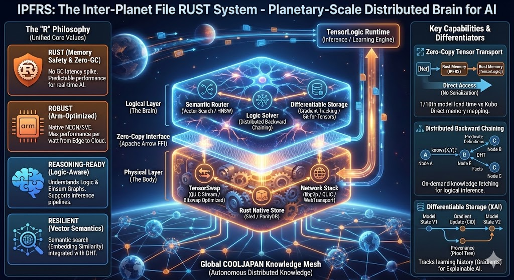

Распределённая файловая система на Rust, где каждый блок — сам себе адрес (CID = hash данных). Поверх классического IPFS добавлены семантический поиск, нейро-символический вывод и гео-распределённое исполнение графов между пирами.
Чистый Rust, без C/Fortran-зависимостей. Цифры выверены по рабочему дереву репозитория.
Каждый домен говорит на своём Ubiquitous Language, масштабируется независимо и сходится к единому токену границы — CID (общий Shared Kernel ipfrs-core).
Контент-адресуемое хранилище блоков поверх Sled B+tree с WAL и ACID.
165 файлов · 135 684 строк
P2P-слой на libp2p: обнаружение пиров, маршрутизация, устойчивость.
230 файлов · 157 910 строк
Поиск по смыслу: векторные эмбеддинги и приближённый k-NN.
169 файлов · 142 392 строк
Нейро-символика: логика-как-тензор, вывод и обучение.
227 файлов · 160 207 строк
Обмен блоками между пирами с приоритезацией.
61 файл · 34 299 строк
ipfrs-core — фундамент, на котором сходятся все контексты.
51 файл · 23 949 строк
Свежая веха: вычислительный граф разбивается на стадии и исполняется на разных пирах, а активации стримятся между ними по libp2p. Реализовано через инверсию зависимостей — без цикла network ↔ tensorlogic.
/ipfrs/activation/1.0.0libp2p request-response протокол — стриминг активаций между пирами (паттерн, как у block-fetch / semsearch).NumExecutor над NumTensor, обобщённый einsum (matmul/matvec/dot/outer/batched) и N-D reduce. Тяжёлый движок можно подставить позже.node→peer, топологический порядок, contiguous-сплит для pipeline-параллелизма.plan_routing), выкачка по /ipfrs/blockfetch/1.0.0 с проверкой cid == hash(data).2-stage граф · 2 живые libp2p-ноды УЗЕЛ A (оркестратор) УЗЕЛ B (executor) ───────────────── ───────────────── initial{x,b1,b2} │ stage 1 ──────▶ execute_stage │ h = relu(x+b1) │ ◀────── activation h (по сети) stage 2 (локально) y = h * b2 │ ▼ y == [30, 0] ✓ (== монолитный граф)
12 крейтов Cargo-workspace, организованных как DDD context map. Каждый крейт — отдельный поддомен.
| Крейт | Роль | Файлы | Строки | Доля |
|---|---|---|---|---|
| ipfrs-tensorlogic | Нейро-символика · 20+ движков | 227 | 160 207 | |
| ipfrs-network | libp2p · Kademlia · gossip | 230 | 157 910 | |
| ipfrs-semantic | HNSW · DiskANN · роутинг | 169 | 142 392 | |
| ipfrs-storage | Sled · WAL · GC · декораторы | 165 | 135 684 | |
| ipfrs-transport | Bitswap · Session · QUIC | 61 | 34 299 | |
| ipfrs-core | Shared Kernel · Cid · Ipld | 51 | 23 949 | |
| ipfrs-interface | Шлюз · gRPC · GraphQL · WS | 29 | 17 621 | |
| ipfrs | Узел / оркестратор (Facade) | 50 | 16 074 | |
| ipfrs-cli | CLI · clap · ratatui | 36 | 12 821 | |
| ipfrs-wasm | WebAssembly bindings | 5 | 2 726 | |
| ipfrs-nodejs | Node.js FFI · napi-rs | 2 | 1 060 | |
| ipfrs-python | Python FFI · PyO3 | 1 | 590 |
Проверенные Rust-компоненты, async-first, zero-copy там, где это важно.
Разблокировка гео-распределённого вывода велась итеративными спайками. Все — на main, зелёные тесты, чистый clippy.
ipfrs_source/crates/**: спроектированная модель честно отделена от реализации, заглушки помечены (⚠️ swarm-fetch, TLS-генератор, GraphSync/erasure). Полный реестр — в Wiki/11-RealityCheck.